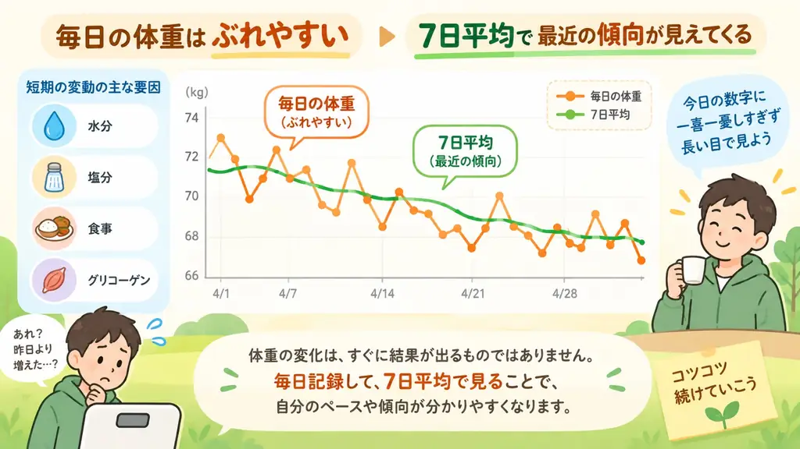

体重の見方
体重はなぜ7日平均で見るの？
公開日: 2026年9月22日
「昨日より0.8kg増えている。太ったのかな？」毎日体重を量っていると、そんな数字が気になることがあります。 ところが翌日には戻っていたり、数日後にはさらに軽くなっていたりします。これは珍しいことではありません。
1日の体重には、体脂肪の変化だけでなく、水分や食事などによる短期的な変化も含まれているからです。 そこで役立つのが、7日平均のように数日間の体重をまとめて見る方法です。

先に要点
- 1日の体重は、水分や食事などの影響でも動きます。
- そのため、1日だけでは本当の傾向が見えにくいことがあります。
- 7日平均は、短期の上下をならして、最近の流れを見やすくするための方法です。
昨日より増えた。その全部が脂肪とは限らない
体重計が測っているのは、体脂肪だけではありません。その時点の身体全体の重さです。 体内の水分、食べたものや飲んだもの、消化管の中身、塩分の摂取量、 炭水化物の摂取や体内に蓄えられるグリコーゲンなどによっても体重は動きます。
研究でも、日ごとの体重変動には水分の変化が大きく関わることが報告されています。 また、グリコーゲンの増減には水分の変化も伴います。 そのため、翌朝の体重が増えていても、増えた分がそのまま体脂肪になったとは限りません。
逆に、急に減ったときも同じ
これは体重が増えたときだけの話ではありません。 食事量や炭水化物量などが変わった後に、短い期間で体重が下がることもあります。 その場合も、水分やグリコーゲンなどの変化が含まれていることがあります。
つまり、「昨日より増えたから失敗」「昨日より減ったから成功」と 1日ごとに判断すると、実際の流れを見誤ることがあります。
「今日の数字」と「最近の流れ」は別のもの
毎日の体重には意味があります。ただし、見ているものが違います。 今日の実測値は「今日、体重計が何kgを示したか」を見る数字です。 一方で7日平均は「最近の体重が全体としてどちらへ動いているか」を見やすくするための数字です。
どちらか一方が正しくて、もう一方が間違っているわけではありません。役割が違います。
7日平均では、短期の上下が少し見えにくくなる
7日平均は、直近の複数日の体重を平均していく方法です。 こうした方法は「移動平均」と呼ばれます。 移動平均は、時間とともに変化する数字の短期的な上下をならし、全体の流れを見やすくする方法です。
毎日の体重が細かく上がったり下がったりしていても、平均して見ると、 最近はほぼ横ばいなのか、少しずつ下がっているのか、少しずつ上がっているのかを読み取りやすくなります。
なぜ「7日」なの？
まいにちウォークでは、最近の体重の流れを見るために7日平均を使っています。 7日という期間には、日々の短期変動をある程度ならしつつ最近の変化も反映しやすく、 平日と休日を含む1週間をひとまとまりとして見られるという実用上の分かりやすさがあります。
ただし、7日だけが医学的に正しい期間という意味ではありません。 目的によっては、もっと短い期間や長い期間で見る方法もあります。 まいにちウォークの7日平均は、毎日記録している体重を、短期の上下に振り回されずに振り返るためのひとつの方法です。
平均を見る前に、測り方をそろえることも大切
7日平均を使っても、毎回の測定条件が大きく違えば、体重のばらつきは増えます。 NHS Englandでは、体重を記録するときは同じ体重計を使い、できるだけ同じ時間帯で測ることを勧めています。
たとえば朝の決まったタイミングなど、自分が続けやすい条件を決めておくと比較しやすくなります。 大切なのは、完璧な条件を作ることよりも、なるべく同じ条件で続けることです。
まいにちウォークでは「実測」と「7日平均」を両方見る
まいにちウォークの体重グラフでは、記録した体重の実測値と7日平均の線を一緒に表示します。 実測の点を見るとその日の体重が分かり、7日平均の線を見ると短期的な上下を少しならした最近の流れが分かります。
最新の体重カードにも「7日平均」を表示しているので、今日の体重と最近の傾向を分けて確認できます。
「前週比」も7日平均で見る
まいにちウォークの「前週比」は、今日の体重と7日前の1日の体重を直接比べる数字ではありません。 現在の7日平均と、およそ1週間前の7日平均の差として表示します。
そのため、「先週のこの日はたまたま水分が多かった」といった1日だけの影響を受けにくくしながら、 最近の流れがどう変わっているかを確認しやすくなります。
毎日量るなら、毎日の数字に振り回されない
毎日体重を記録することと、
毎日の増減を気にしすぎないことは、両立します。
記録が続くほど流れを振り返りやすくなります。でも、判断するときは1点ではなく、何日かの流れを見る。 そのために7日平均があります。
昨日より体重が増えていても、7日平均がほとんど変わっていないなら、 「最近の流れは大きく変わっていない」と見ることもできます。 毎日の数字は記録する。でも、見るときは少し長い目で見る。 これが、まいにちウォークで7日平均を表示している理由です。
歩数と体重を、どちらも「流れ」で見る
歩数についても、体重についても、1日だけでは分からないことがあります。 毎日の歩数を記録し、体重も必要に応じて記録する。それが積み重なると、 「最近よく歩けている」「体重の流れは少し変わってきた」といった変化を振り返りやすくなります。
歩数と体重の関係については、 「歩数と体重はどう関係する？」で詳しく説明しています。
さらに記録が増えたとき、その流れから「このまま続けたらどうなるか」をどう考えるのか。 次の記事では、まいにちウォークの体重予測のしくみを紹介します。
関連記事
参考にした情報
- NHS England How to record your weight
- NIST/SEMATECH e-Handbook of Statistical Methods What are Moving Average or Smoothing Techniques?
- Scientific Reports / PubMed Central Day-to-day variability in euvolemic body mass
- NIDDK Dynamic Mathematical Model of Body Weight Change in Adults - Appendix
- Physiological Reports / PubMed Central Composition of two-week change in body weight under unrestricted free-living conditions
本記事は一般的な情報提供を目的としたもので、医療上の診断や治療を目的とするものではありません。 医療機関から体重測定や水分管理について個別の指示を受けている場合は、その指示を優先してください。